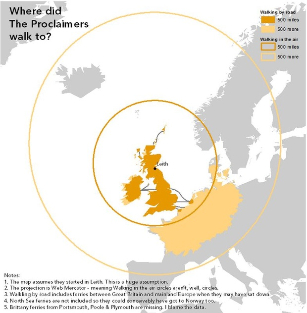
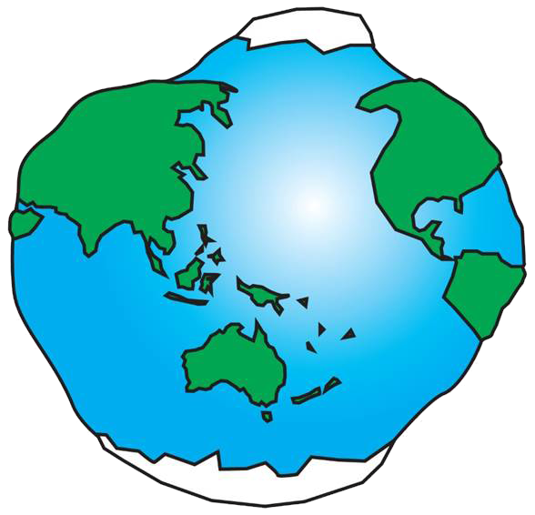
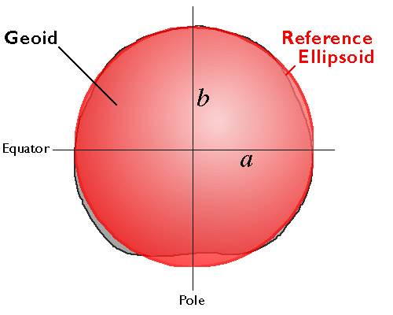
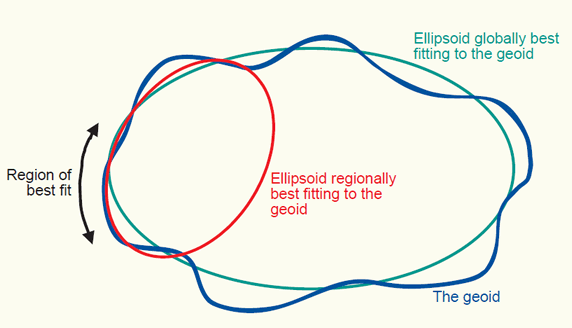

Projections and Coordinate Systems
for the modern mapper
Created by Mike Foster for Maptime Boston
Hi! I'm Mike. I make maps.
I am a biker, sailor, and skier... and also
a geographer, planner, web guy, and educator.

GIS/Data Visualization Specialist
MIT Department of Urban Studies and Planning
mjfoster@mit.edu | @mjfoster83
Follow Along
Map Projections Matter
Don't they?
“Projections in web browsers are terrible and you should be ashamed of yourself”
- Calvin Metcalf
For those of you dropping points
on web maps...
You can ignore about 90% of this, but please pay attention...
that last 10% matters!
In what way, you say?
To where were The Proclaimers walking?

Hazel McKendrick
Where The Proclaimers were actually walking.

Kenneth Field
Where is Boston?

North Korea's Missile Threat
I don't think this is right...

The Economist
North Korea's Missile Threat
There we go. Ahh!

The Economist
Oy. Okay.
Let's talk map projections.
Introducing: Geodesy
Geodesy
The science of accurately measuring and understanding the Earth's geometric shape, orientation in space, and gravitational field.
The earth looks like...

Geoid

Geoid
Geodesists define the Earth's surface as a surface that closely approximates global mean sea level, but across which gravity is everywhere equal. This is the geoid. Geoids are lumpy because gravity varies from place to place in response to local differences in topography and variations in the density of the materials in the Earth's interior.
Geoid
Geoids are a little squat. Sea-level gravity is greater at the poles than the equator, a consequence of the Earth's oblate shape and centrifugal force.

Ellipsoid
Ellipsoids, or spheroids, are commonly used as surrogates for geoids so as to simplify the mathematics involved in relating a coordinate system grid with a model of the Earth's shape. Ellipsoids are good, but not perfect, approximations of geoids.
Ellipsoid
There are many ellipsoids. Local ellipsoids minimize differences between the geoid and ellipsoid on a local or regional scale.

Geoids and Ellipsoids

Clarke 1866
Is the ellipsoid is optimized for North America.
Centered at Meade's Ranch, Kansas.
Where the geoidal height is considered to be zero.
Using Clarke 1866
Latitude and longitude of every other point in North America is based on distance and direction from Meade's Ranch.
Common Ellipsoids
Clarke 1866 - North American Ellipsoid
GRS 1980 - Geodetic Reference System of 1980 (Global)
WGS 1984 - World Geodetic System of 1984 (Global)

GRS 1980 vs. WGS 1984
| Ellipsoid | Semi-major Axis (a) | Semi-minor Axis (b) |
|---|---|---|
| GRS 1980 | 6,378,137.0 m | 6,356,752.314140 m |
| WGS 1984 | 6,378,137.0 m | 6,356,752.314245 m |
tl;dr
Very small differences in the semi-minor axis (north pole to south pole) result in minute difference in flattening.
Datums
Based off of ellipsoids, but allow for local variations in elevation.
Pssst... WGS 1984 is a 'global datum'...
Major North American Datums (NAD)
| Regional Datum | Ellipsoid |
|---|---|
| 1st NAD (1901) | Clarke 1866 |
| NAD 1927 | Clarke 1866 |
| NAD 1983 | GRS 1980 |
NAD 1927 and NAD 1983
A point having a given latitude and longitude in NAD 1927 might be displaced on the order of tens of meters from another point having identical latitude and longitude in
NAD 1983. It is important to specify.
Case: Bellingham, Washington
| Datum | Longitude | Latitude |
|---|---|---|
| NAD 1927 | -122.466903686523 | 48.7440490722656 |
| NAD 1983 | -122.46818353793 | 48.7438798543649 |
| WGS 1984 | -122.46818353793 | 48.7438798534299 |
NAD 1927 and NAD 1983

NAD 1983 (HARN)
What the heck is HARN?
HARN stands for High Accuracy Reference Network. It is a statewide or regional upgrade in accuracy of NAD83.
Worldwide Acceptance
GRS 1980 and WGS 1984 are not the best fit for any given region, but as benefits of a global system outweigh the greater accuracy, the global datums are becoming increasingly adopted.
Unless otherwise noted, GPS data is collected in WGS84
Most of the Time, when given a latitude and longitude, it will use wgs 1984
Map Projections
Map Projections

Map Projections
The surface of the earth is curved, maps are flat.
A map projection is the mathematical transformation of the Earth to a flat surface.
No matter how you try, the resulting maps always have distortions.
Four Types of Distortion
- Conformality - distortion of shape
- Distance - distortion of distance
- Area - distortion of size
- Direction - distortion of direction
Possible to retain at least one of these properties, but not all

Greenland vs. Africa

Projection Types
- Conformal - local/small shapes are preserved
- Equal Area - areas are preserved
- Equidistant - distance from single location to other locations preserved
- Azimuthal - direction from single location to other locations preserved
Methods of Projection

Planar/Azimuthal
- Earth intersects the plane on a small circle. All points on the circle have no distortion.
- The further away from the plane, the more error incurred.

Cylindrical
- Conceptualized as the result of wrapping a cylinder of paper around the Earth.
- Mercator is best known.
- Conformal when scale is the same in both directions. Significant distortion away from meridian.

Conic
- Conceptualized as the result of wrapping a cone of paper around the Earth.
- Standard parallels where cone meets Earth. Map most accurate at these locations.
- Lambert Conformal Conic projection commonly used for North America.
Coordinate System
Coordinate systems are used to accurately identify locations on the surface of the Earth.
- Geographic Coordinate System
- Projected Coordinate System
Geographic Coordinate System
- Location measured from the curved surface of the earth.
- Units are latitude and longitude.
- "Unprojected" - in 3D
- i.e. WGS 1984, NAD 83
- CAN'T BE USED FOR CALCULATIONS
Projected Coordinate System
- Location measured from flattened surface.
- Units are meters, feet, and inches.
- "Projected" - in 2D
- i.e. UTM, State Plane
- USED FOR CALCULATIONS (in limited contexts)
UTM: Universal Transverse Mercator
International Global Standard
- Cylindrical. Transverse. Cyclinder wrapped around the poles.
- 60 zones. 6 degrees each. Max Distortion: 0.04%
UTM Zones
Boston is in Zone 19 North!
UTM Coordinates
Northing and Easting. Measured in meters.

Boston Logan Int'l Airport
UTM Zone 19 North, 333,475.33mE, 4,692,503.57mN
State Plane
Defined by each state. Can be more accurate than UTM.
Some states have several. Massachusetts has two.

Map Projections? I thought we were talking Rat Projections!
Thank you, Doug Greenfield

Projections and Web Mapping
Web Mercator
The de facto standard for web mapping applications.
Web Mercator
- Used by almost all major online map providers.
- Google, Bing, Mapquest, Mapbox, OpenStreetMap, etc.
- Slight, simplified variant of the Mercator.
- Simplified to save computing power.

“Projections in web browsers are terrible and you should be ashamed of yourself”
- Calvin Metcalf
Web Mercator
- Based on WGS 1984 Spheroid.
- Huge distortion at poles. (Actually can't show poles!)
- Declared unacceptable for official use by US DOD and NGA. (What?!)
Projecting Data
Projecting Data
Get your data in the right projection using GIS software!
Common source of improper overlay. Standardize early.
Become friends with the reprojection tools.
- ArcMap
- QGIS
Leaflet does not (easily) use projections. D3 lets you!
EPSG
EPSG: Geodetic Parameter Set
- Name from the European Petroleum Survey Group (now defunct)
- Numeric system that specifies projection.
- Used in many online applications, QGIS, PostGIS, etc.
EPSG: Geodetic Parameter Set
| Spatial Reference | Code |
|---|---|
| WGS 1984 | EPSG:4326 |
| NAD 1983 | EPSG:4269 |
| WGS 84/UTM 19N | EPSG:32619 |
Tools and Toys
Projection Face!
Maptime Boston's own Andy Woodruff
Projection Wizard
Bojan Savric - Oregon State University
D3 Map Projections
Jason Davies
Project it Yourself!
Tom Macwright
Click to visit
Enter the following to get a Mercator.
function project(x, y) {
return [x, ( 180/Math.PI) * ( 2 * Math.atan(Math.exp(y * Math.PI/180)) - Math.PI/2 )];
}Kartograph.org
Gregor Aisch - Kartograph.js